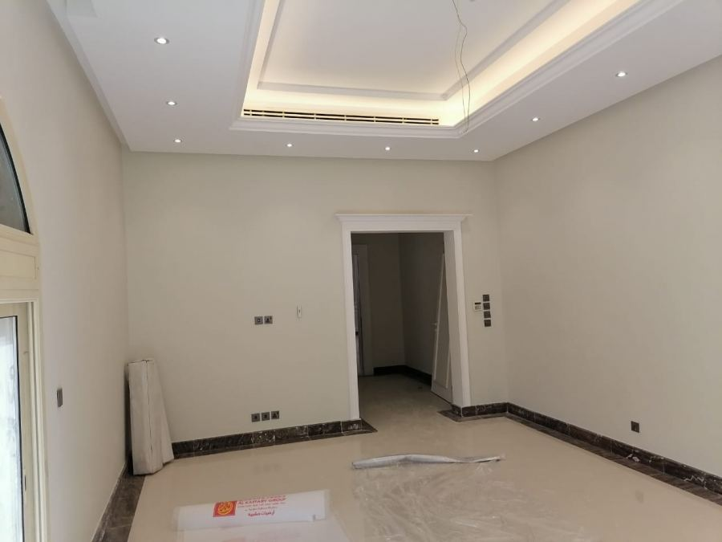
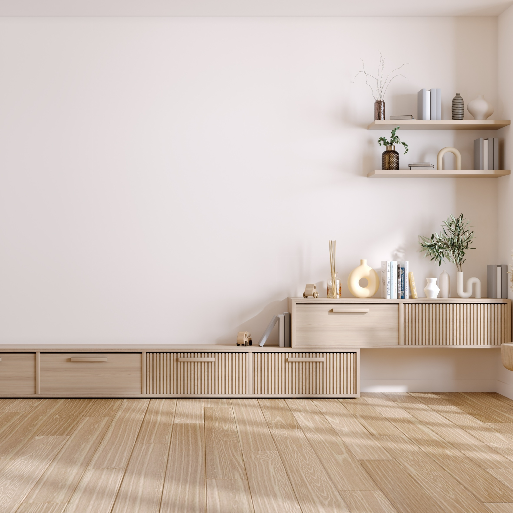

تفاصيل الخدمة
دهانات داخلية وخارجية وترميم وتجديد ألوان في المدينة المنورة باحترافية وخامات ممتازة، مع تجهيز الجدران وحماية المكان أثناء التنفيذ. نعتمد على المعاينة الدقيقة، اختيار الخامة المناسبة، وضبط المقاسات قبل التنفيذ لضمان نتيجة نهائية تليق بالمنازل والمجالس والمكاتب.


ما هي خدمة دهانات؟
نقدم أعمال الدهانات الداخلية والخارجية وتجديد الألوان ومعالجة الجدران قبل الدهان للحصول على نتيجة ناعمة ومتناسقة.
مميزات الخدمة
- تجهيز الجدران ومعالجة العيوب قبل الدهان.
- اختيار ألوان متناسقة مع الأثاث والإضاءة.
- تنفيذ دهانات داخلية وخارجية.
- تشطيب نظيف وحماية للمكان أثناء العمل.
أين تستخدم؟
- غرف النوم والمعيشة
- المجالس والممرات
- واجهات خارجية
- مكاتب ومحلات
لماذا إدراك للديكور والدهان الحديث؟
نعمل بخطوات واضحة تبدأ بالمعاينة وفهم احتياج العميل، ثم اقتراح الحل الأنسب من ناحية الشكل والخامة والتكلفة، وبعدها تنفيذ منظم وتسليم نهائي بصورة تليق بالمكان.
خطوات التنفيذ
معاينة المكان
نحدد المقاسات وطبيعة المساحة قبل البدء.
اختيار التصميم
نقترح الألوان والخامات المناسبة للمكان.
تنفيذ نظيف
نرتب خطوات العمل ونحافظ على جودة التشطيب.
تسليم نهائي
نراجع التفاصيل النهائية مع العميل قبل التسليم.
الأسئلة الشائعة
هل توفرون معاينة قبل تنفيذ معلم دهانات؟
نعم، نوفر معاينة للموقع داخل المدينة المنورة لتحديد المقاسات والخامات المناسبة قبل بدء التنفيذ.
كم يستغرق تنفيذ معلم دهانات؟
مدة التنفيذ تختلف حسب مساحة المكان وتفاصيل التصميم، ويتم توضيح المدة المتوقعة بعد المعاينة.
هل يمكن طلب عرض سعر عبر واتساب؟
نعم، يمكنك إرسال صور المكان أو المقاسات عبر واتساب وسيتم الرد عليك بالتفاصيل المناسبة.
تحتاج معاينة أو عرض سعر؟
تواصل معنا الآن وحدد نوع الخدمة والمساحة، وسيتم الرد عليك بالتفاصيل المناسبة.